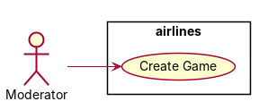
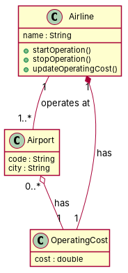

R1: Many different airlines can operate in different airports. R2: An airline has a name and an airport has a code and is in a city. R3: Each airline has associated a cost for operating in a specific airport. R4: Besides, the operation of an airline in a specific airport can be started and stopped at any time, and its operating cost can be updated at any time. R5: The relation between airport and airline contains a details class with the operating cost.
Red, struck-through: removed by ambiguity removal; green: added.
| actors (0 → 0) |
|---|
| classes (3 → 3) |
|---|
| Airline |
| Airport |
| OperatingCost |
| attributes (2 → 2) |
|---|
| Airline.name |
| Airline.operation |
| relations (1 → 1) |
|---|
| has: Airline -> Airport |
| id | req | type | cue | status | readings / explanation |
|---|---|---|---|---|---|
| A1 | R1 | quantifier | Many | open | Many different airlines can operate in the same airport.; A single airline can operate in many airports. The phrase 'Many different airlines' could imply multiple airlines operating in the same airport or a single airline operating in multiple airports. |
| A2 | R4 | referential | its | resolved | The operating cost can be updated at any time.; The operating cost of the specific airport can be updated at any time. The pronoun 'its' could refer to the operating cost of the airline or the airport. |
| A3 | R4 | quantifier | any | open | The operation of an airline in a specific airport can be started and stopped at any time.; The operation of an airline in any airport can be started and stopped at any time. The word 'any' could refer to any specific airport or any airport in general. |
| A4 | R4 | actor | passive 'started' without agent | open | The operation of an airline can be started and stopped by the airline itself.; The operation of an airline can be started and stopped by an external entity. The passive voice 'can be started and stopped' could imply that the airline itself or an external entity can perform these actions. |
| A5 | R5 | incompleteness | details | open | The relation between airport and airline contains a class with the operating cost.; The relation between airport and airline does not contain a class with the operating cost. The phrase 'The relation between airport and airline contains a details class with the operating cost' is incomplete and could imply the presence or absence of such a class. |


"""Code skeleton generated from the shared model of D4/airlines.
Every class and method records the requirement(s) it traces to."""
from __future__ import annotations
import dataclasses as _dc
import enum as _enum
import typing as _t
@_dc.dataclass
class Airline:
"""Source: -"""
name: _t.Optional[str] = None
airports: _t.List["Airport"] = _dc.field(default_factory=list)
operatingCost: _t.Optional["OperatingCost"] = None
def startOperation(self) -> None:
"""Operation."""
raise NotImplementedError
def stopOperation(self) -> None:
"""Operation."""
raise NotImplementedError
def updateOperatingCost(self) -> None:
"""Operation."""
raise NotImplementedError
@_dc.dataclass
class Airport:
"""Source: -"""
code: _t.Optional[str] = None
city: _t.Optional[str] = None
operatingCost: _t.Optional["OperatingCost"] = None
@_dc.dataclass
class OperatingCost:
"""Source: R5"""
cost: _t.Optional[float] = None
| python_compiles | True |
|---|---|
| java_compiles | True |
| attribute_mismatches | 0 |
| method_mismatches | 0 |
| use_cases | 1 |
| use_cases_without_actor | 0 |
| use_cases_without_method | 1 |
| actors_without_use_case | 0 |
| relations_to_unknown_class | 0 |
| inconsistencies | 1 |
| inconsistency_rate | 0.2 |
| requirement_coverage | 0.6 |
| validator fixes | |
| assumptions for open ambiguities | [{"tag": "A3", "assumption": "The relation between airport and airline contains a class with the operating cost."}, {"tag": "R4", "assumption": "The operation of an airline in a specific airport can be started and stopped by an external entity."}] |
| element | P | R | F1 | TP/FP/FN |
|---|---|---|---|---|
| classes | 0.667 | 0.667 | 0.667 | 2/1/1 |
| attributes | 1.0 | 0.75 | 0.857 | 3/0/1 |
| relations | 0.0 | 0.0 | 0.0 | 0/3/1 |